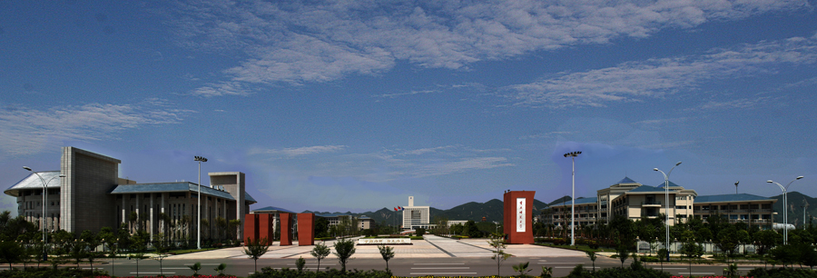

重庆师范大学
文脉深厚，教泽流长。重庆师范大学创办于1954年，是重庆市人民政府举办的全日制综合性普通本科院校，是西部教师教育事业的重要基地之一，办学历史源于1906年官立川东师范学堂。学校1986年获批硕士学位授予单位，2003年更名为重庆师范大学，2017年获批硕士研究生推免单位，2018年获批博士学位授予单位，2020年综合实力跃升全国高校前200名。
作为新中国最早创办的高等师范院校之一，学校始终秉承“立教无以文化人”的办学理念，恪守“厚德、笃学、砺志、创新”的校训精神，立足西部、扎根重庆、服务全国，建立起学前教育、小学教育、中等教育、高等教育、继续教育、职业技术教育、特殊教育和海外华文教育师资培养培训的完备教师教育体系。构建起师范教育和非师范教育“两轮驱动”，基础教育、职业教育和汉语国际教育“三驾马车”，文化传承与创新、决策咨询与公共服务、科技攻关与应用转化“三大板块”的特色办学格局。
师道尊严，彬彬济济。学校现有17个二级学院，1个独立二级学院，在校学生3万余人，其中全日制本科生24000余人、研究生4000余人、留学生500余人；在职教职工2000余人，其中正高职称和博士1000余人，博士生导师和硕士生导师800余位。有国际系统与控制科学院院士、国家“千人计划”、“万人计划”人选、“新世纪百千万人才工程”国家级人选、国家级有突出贡献的中青年专家、全国杰出专业技术人才、全国文化名家暨“四个一批”理论人才、教育部科技委数理学部委员、“中国青年科技奖”获得者、享受国务院政府特殊津贴专家、“海外杰青”获得者、中国科学院“百人计划”人选等国家级专门人才29人次。有教育部重点人才工程人选、重庆市重点人才工程人选230余人次。
踵事增华，锐意兴革。学校学科建设体系完备，一级学科覆盖哲学、法学、经济学、教育学、文学、理学等11个学科门类，拥有博士一级学科1个，硕士学位授权一级学科25个，硕士专业学位授权点14个。现有17个二级学院，76个本科专业。拥有2个重庆市一流学科，14个市级十三五重点学科，2个“人工智能+”学科群；有数学与信息科学、文博与艺术文化、生命科学与绿色生态、智能材料与新能源、区域经济与产业发展、教师教育等6大优势学科群。

- 周 文 党支部 书记 1954.04—1956.05
- 李栋宸 党支部书记 1956.05— 1956.11
- 金 涛 党支部副书记 1956.05—1956.11
- 刘平直 党总支书记 1956.11—1958.11
- 王厚溥 党委书记 1958.11—1983.08
- 朱桂芳 党委副书记 1964.08—1966.05